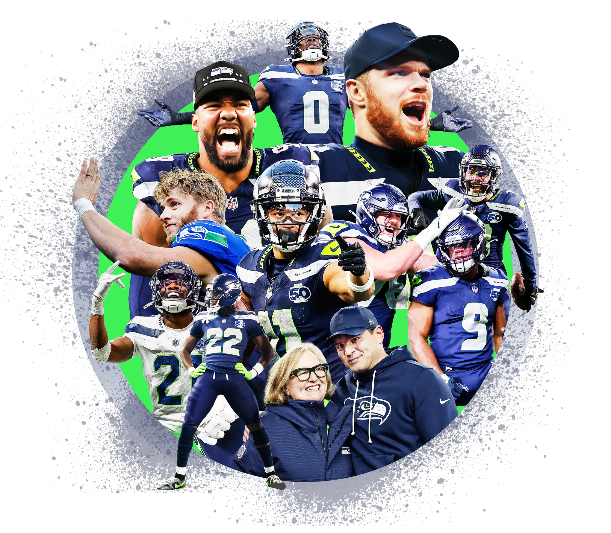

Team Roster
- Sam Darnold - Quarterback
- Drew Lock - Quarterback
- Jalen Milroe - Quarterback
- Jadrian Price - Running Back
- Emmanuel Wilson - Running Back
- George Holani - Running Back
- Zach Charbonnet - Running Back
- Brady Russell - Fullback
- Jaxon Smith-Njigba - Wide Receiver
- Cooper Kupp - Wide Receiver
- Rashid Shaheed - Wide Receiver
- Jake Bobo - Wide Receiver
- Tory Horton - Wide Receiver
- AJ Barner - Tight End
- Eric Saubert - Tight End
- Elijah Arroyo - Tight End
- Jalen Sundell - Center
- Grey Zabel - Guard
- Christian Haynes - Guard
- Beau Stephens - Guard
- Abraham Lucas - Tackle
- Charles Cross - Tackle
- Leonard Williams - Defensive Tackle
- Byron Murphy II - Defensive Tackle
- Rylie Mills - Defensive Tackle
- Jarran Reed - Defensive End
- DeMarcus Lawrence - Defensive End
- Derick Hall - Defensive End
- Ernest Jones IV - Middle Linebacker
- Drake Thomas - Linebacker
- Uchenna Nwosu - Linebacker
- Dante Fowler Jr. - Linebacker
- Devon Witherspoon - Cornerback
- Nehemiah Pritchett - Cornerback
- Josh Jobe - Cornerback
- Julian Neal - Cornerback
- Ty Okada - Safety
- Rodney Thomas II - Safety
- Julian Love - Safety
- Nick Emmanwori - Safety
- Michael Dickson - Punter
- Jason Myers - Kicker
- Tory Horton - Kick Returner
- Rashid Shaheed - Punt Returner
See how the team is doing on the standings page, or share your thoughts in the Fan Zone.